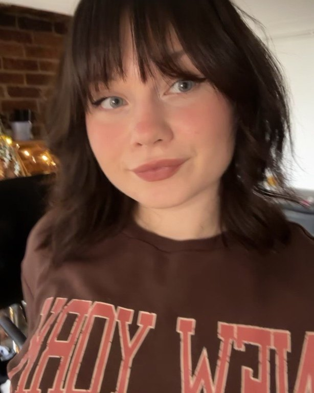

About

Hi, I'm Roksana
If you're looking for a team player who can lead complex design projects with a passion to do good, you've found me!
I've always been a maker: art, craft, anything I can pull apart and put back together. Design lets me keep doing that every day.
What keeps me here is people, and the workarounds they build when software lets them down. That's where the best work starts.
Along the way I've picked up a few hats:
The systems builder
One library solo, one built with our design system lead. I’d rather fix the thing that makes the thing. A banking app’s design system from scratch, then Unily Futures’ 0 → 1 block system: both are about making the next hundred screens easier, not just the next one.
The pattern-breaker
Enterprise software doesn’t have to be dull. I find the one interaction worth doing differently, and defend it. Notifications that chase you instead of broadcasting at you was one of those calls.
The AI tinkerer
Claude workflows, skills and a CRD generator my team actually uses. I design with AI every day, and for it too: Futures had to work for Indi, Unily’s AI agent, as well as for people.
The researcher
20+ discovery sessions and usability tests, including onsite with customers at bank kiosks. I’d rather be wrong in week two than in production.
The partner
PRDs, descoping, refinement. I’d rather argue early than redesign late, and I work best when product, engineering and design share one picture of the problem.
The mentor
I love helping junior designers find their feet. I’d rather pair on real work than hand over answers: sketching side by side, asking “why this?” before I suggest anything, and giving feedback early and often so it never feels like a verdict. I also make room for them to present their own work, because confidence comes from defending your decisions, not from being told they’re right.
I'd rather fix the thing that makes the thing.
It's why I keep ending up in systems work. A good block library, object model or set of rules quietly improves every page built on it, for every person and agent who builds with it. On Futures that meant one shared library for editors and AI, instead of two drifting apart. On Events, it meant getting the model right first and complete later.
“Roksana is someone I can hand almost anything to and know she’ll take it on and tackle it head-on.”
— Rich Clark, Head of Design, Unily